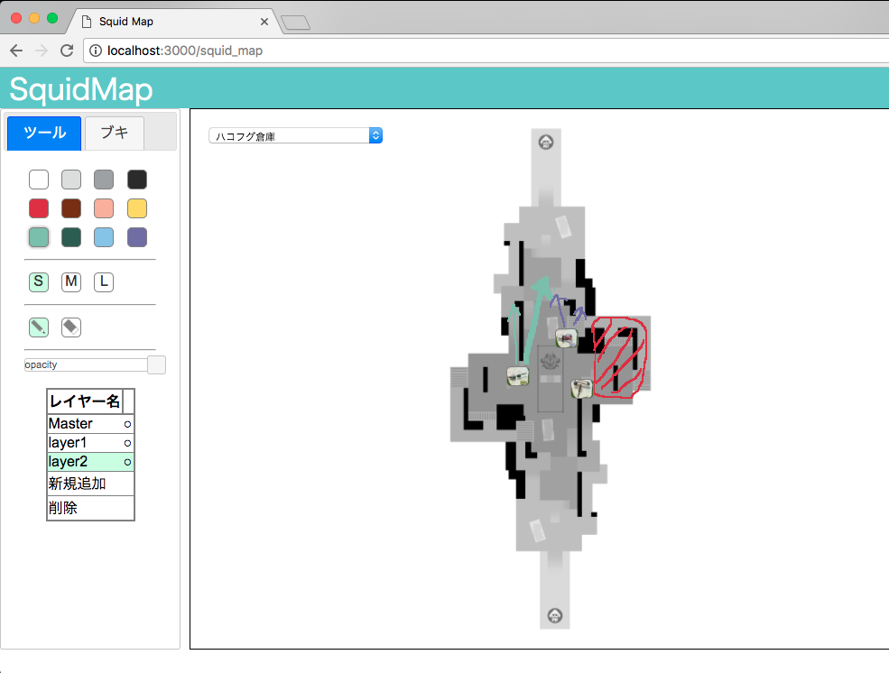

作成したjsなどのサンプルを公開しています
1ページ1枚として、ページをタイル状に構成し、スライド移動できるようにしたものと、その拡張jsたち。
Panel Slider demo
Splatoon用のリアルタイムオンライン作戦ボード。Splatoon2への移行中に著作権問題に不安を感じて更新停止。
SquidMap2 demo
初めての研究と論文。
シミュレーションの出力データ(id, spike time)と細胞の座標 (id, vec3) を読み込んで実行。OpenGLを用いて制作。矢印キーでぐりぐり動かせる。
シミュレーション時間のまま表示すると何もわからないので、1分程度に引き延ばした。最後数秒は適当なデータを与えて回路全体を見やすくしたもの。